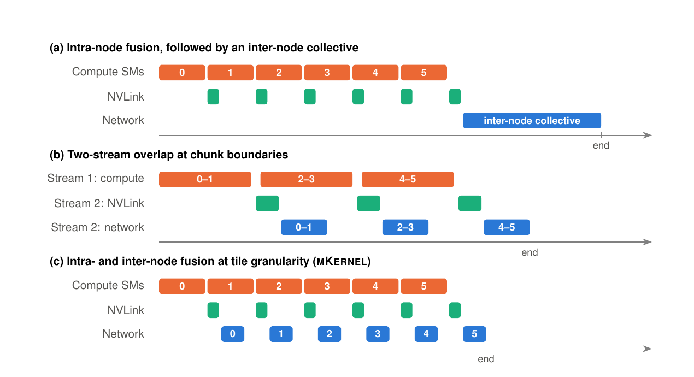
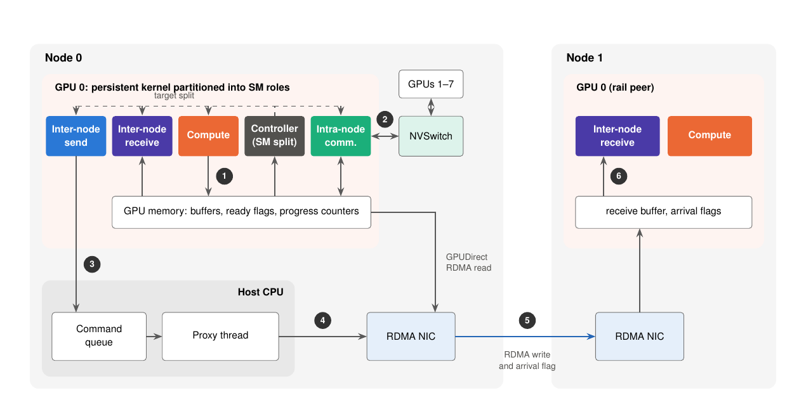
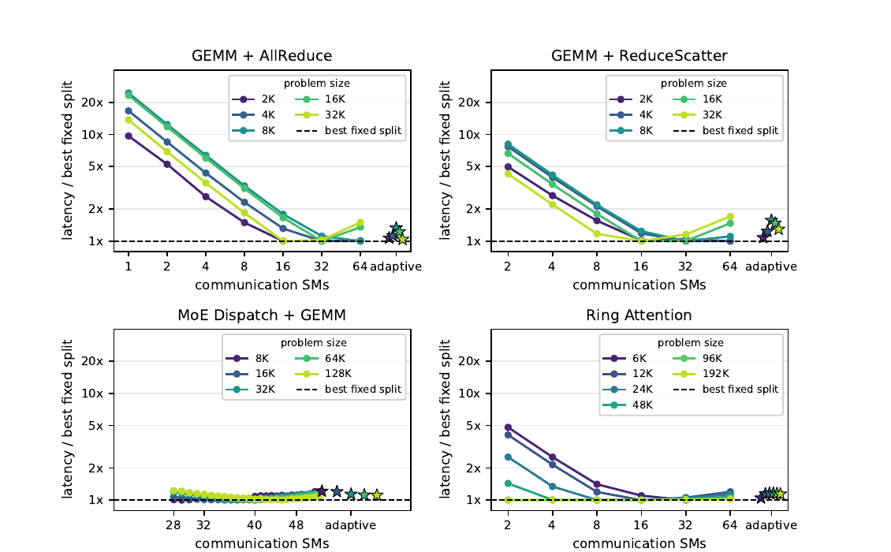
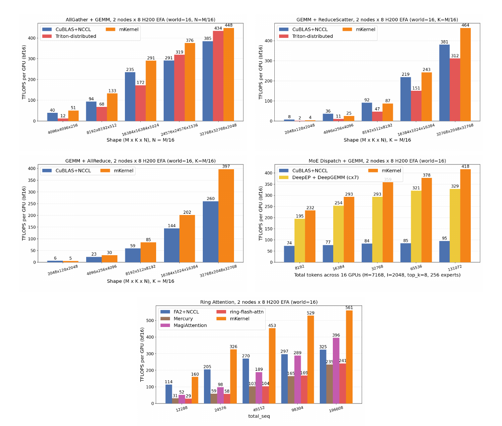
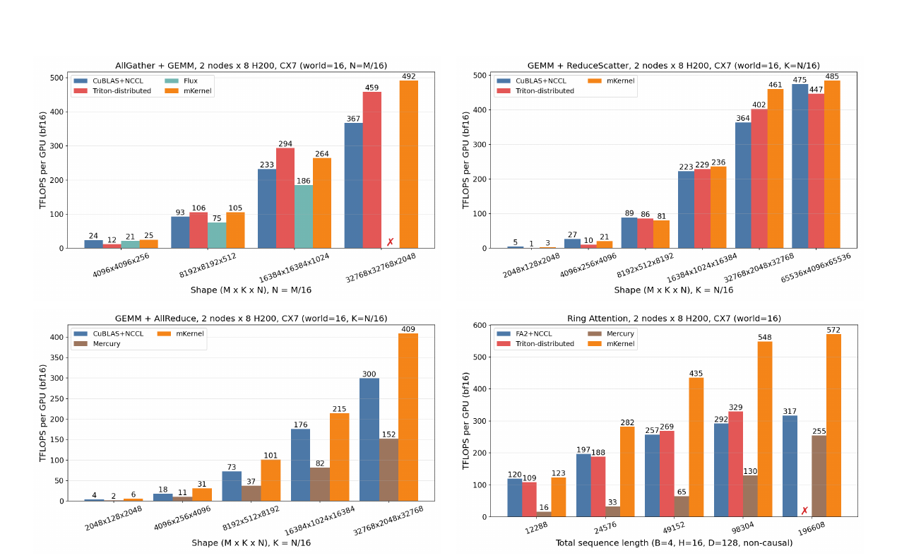

mKernel: Fast Multi-GPU, Multi-Node Fused Kernels
多 GPU kernel 一旦跨出單一 NVLink domain，細粒度 fusion 會同時遭遇慢一個數量級的節點間頻寬、RDMA message 語意、不同 transport ordering 與 SM 資源競爭。mKernel 把 compute、節點內 NVSwitch 搬移與節點間 RDMA 都納入同一 persistent kernel 的 tile-level pipeline，並以專職 thread block、rail-peer 階層式傳輸、host-assisted GPU-initiated command queue 與執行期 SM 分配器維持流水。
實驗事實在兩組 \(2\times 8\) H200 叢集上，GEMM+AllReduce 相對 cuBLAS+NCCL 最高加速 \(1.72\times\)，Ring Attention 最高 \(1.88\times\)；但論文只測到兩個節點，adaptive SM controller 也只在單節點驗證，尚不能直接外推到大規模端到端訓練或 serving。 §5.1–§5.5 · PDF pp.9–12 · Figs. 3, 5, 6
文章目錄
為什麼一個 GPU kernel 需要懂得 NVLink、RDMA 與 SM 分工？
第一個理解障礙，是「kernel」常被想成只在一張 GPU 上算數學；mKernel 的執行單位卻橫跨 GPU 計算核心、節點內 fabric、CPU proxy 與遠端 NIC。要看懂它，只需要三個稍後會反覆用到的概念：tile、persistent kernel，以及兩層通訊階層。
Tile 是流水線中的最小可交付成果
大型 GEMM 或 attention 不會等整個 tensor 完成才產生結果；thread block 逐塊產出固定形狀的 tile。傳統 unfused 流程會先結束完整 compute kernel，再啟動 NCCL collective；two-stream overlap 雖能提早搬資料，但通常仍要等一個 producer kernel 或較大 chunk 的邊界。tile-level fusion 的價值，在於某個 tile 一 ready，就能讓下一個通訊階段接手。 §1–§2.2 · PDF pp.1–3 · Fig. 1
Persistent kernel 讓 thread block 長駐並改做不同角色
一般 kernel launch 把同一工作發給許多 streaming multiprocessor（SM）；persistent kernel 則讓 thread block 留在 GPU 上，從佇列持續取任務。mKernel 利用這一點，把 block 分成 compute、intra-node communication、inter-node send 與 receive；adaptive 模式還能在 task boundary 改變角色。這個分工使計算與通訊真正同時進行，但每多給通訊一個 SM，也等於少給計算一個 SM。 §2.2, §3.2 · PDF pp.3, 6 · Eq. 1
| 層級 | 路徑 | 頻寬 | 程式介面 | 稍後扮演的角色 |
|---|---|---|---|---|
| GPU 內 | HBM3e | 4.8 TB/s | load/store、TMA | compute block 讀寫 tile |
| 節點內 | NVLink + NVSwitch | 450 GB/s | peer-memory / TMA | 先做 local reduction 或 broadcast |
| 節點間 | ConnectX-7 InfiniBand 或 AWS EFA | 50 GB/s | message-oriented RDMA | 只傳階層化後的 network chunk |
分析這個 \(4.8\text{ TB/s} \rightarrow 450\text{ GB/s} \rightarrow 50\text{ GB/s}\) 階層說明了為何不能把所有連線視為等價：跨節點頻寬只有 NVLink 的約九分之一，演算法必須先在快層聚合，再把最少資料送入慢層。 §2.1 · PDF p.3 · Table 1
GPU-initiated 不必等於 GPU 直接敲 NIC doorbell
mKernel 的 GPU thread block 決定何時傳送，並把 48-byte command 寫入 pinned host-memory ring buffer；CPU proxy 負責轉成 verbs submission，NIC 仍直接在 GPU memory 間搬 payload。這是 host-assisted GPU-initiated communication。另一條 IBGDA 路徑才是 GPU 直接操作 NIC work queue；兩者會在證據章節比較。 §3.3 · PDF p.7
現在已有三個積木：tile 是進度單位、persistent block 是執行者、NVLink/RDMA 是速度與語意不同的兩段路。下一個問題是，為何把既有單節點 fusion 原封不動延伸到遠端會卡住？
跨出 NVLink domain 後，細粒度 fusion 為何會失效？
這一章要排除的誤解是：只要把 NCCL collective 切得更小，就能得到跨節點 tile-level overlap。實際上，跨節點同時改變頻寬、傳輸粒度、完成語意、記憶體可見性與 SM 資源配置；五個障礙必須一起處理。
{kind=link}

五個障礙不是五個獨立小問題
- 頻寬不對稱：network 容易成為式 (1) 的最大項，應先在 NVSwitch 聚合／複製，並沿 rail peer 只送必要資料。
- 粒度不對稱：節點內是細粒度 memory semantics，RDMA 卻要明確的 buffer range 與 completion；一 tile 一 request 會被 per-message overhead 吃掉。
- ordering 不一致：InfiniBand reliable connection 可用 data-write 後接 flag-write；AWS EFA 的 SRD 不保證兩筆獨立 write 按序抵達，不能看到 flag 就假定 payload 完成。
- 跨裝置同步：NIC completion、GPU memory visibility 與遠端 block 的 readiness polling 必須協調，又不能每個 chunk 都做全域同步。
- SM 分配會隨 shape 與 kernel 改變：最佳 communication-SM 數在論文 sweep 中跨越 2 到 64；固定比例可能讓 compute 或 communication 任一側餓死。
§2.3 · PDF pp.3–4 · C1–C5
其中 \(S\) 是總 SM 數、\(S_c\) 是分給通訊的 SM；\(T_{\mathrm{compute}}\) 是全部 SM 都用於計算時的時間。增加 \(S_c\) 可能降低通訊時間，卻把計算項放大為 \(S/(S-S_c)\)。此式是 steady-state 的近似模型，不是包含所有資源干擾的精確預測器。 §2.2 · PDF p.3 · Eq. 1
最近的單節點 fused kernel 已能在 GEMM prologue／epilogue 插入搬移，two-stream pipeline 也能在 chunk boundary overlap；它們的缺口是無法同時回答「哪個 local tile 已齊」、「何時湊成值得送的 RDMA chunk」、「遠端何時真的可讀」以及「該留多少 SM 給每一段」。 §1, §2.2, §6 · PDF pp.1–3, 12–13
跨節點 fusion 的設計要求因此是：維持 tile-level readiness、用階層式傳輸壓低慢網路流量、把 transport-specific completion 藏在共同介面後，並能在執行中平衡 compute 與 communication SM。 §2.3–§3 · PDF pp.3–4
需求已推導完成。下一章不先談所有元件，而是跟著一個 GEMM+AllReduce output chunk 從「最後一塊 local tile 完成」一路走到遠端可消費。
把一塊 output tile 送到另一個節點，最早能在何時出發？
最容易混淆的是三種「ready」：單一 tile 算完、足夠多 tile 已組成 network chunk、以及遠端 payload 已安全可讀。mKernel 的核心洞見不是把它們合併，而是用明確 handoff 把三種進度拆開。
一個 256 KiB GEMM+AllReduce chunk 的旅程
假設 GPU 正在產生 AllReduce output。每張 GPU 先各自算 tile；NVSwitch 將同一 tile 的八份 local contribution 聚合到負責該 tile 的 GPU。論文的 GEMM+AllReduce 會把四個已 locally reduced 的 tile 組成一個 256 KiB network chunk：每完成一個 tile 就遞增 per-chunk counter，最後一個 tile 才發布 message readiness。 §3.1 · PDF pp.4–5
此時不必等整個 GEMM 結束。inter-node send block 把 chunk command 放進 host ring；proxy 將命令批次送給 NIC；NIC 對同 local-index 的 rail peer 做 GPUDirect RDMA。遠端收到後，才由 receive block 合併兩個 node partial sum，再透過 NVSwitch broadcast 給本節點其餘 GPU。簡化的比喻像四件貨湊成一個箱子就發車，而不是等整座倉庫出清；比喻的界線是，真實系統還有 transport ordering、GPU memory visibility 與 SM 競爭，並非只有裝箱延遲。
{kind=link}

三個粒度可以獨立選擇
compute tile 決定計算規律性，network chunk 在「早點出發」與「攤平 per-message overhead」間取捨，proxy submission batch 則攤平 NIC doorbell 成本。mKernel 的 proxy 一次最多合併同一 connection 的八個 command，但不強迫湊滿；最後幾個或稀疏抵達的 command 可在 bounded polling window 後部分提交。這不等於把八個 command 合成一個大 chunk：每個 command 仍保留自己的 data transfer 與 arrival notification。 §3.1, §3.3 · PDF pp.5, 7
分析這個分離是論文最可重用的抽象：producer granularity、transport granularity 與 submission granularity 不必相同。只要每層有可驗證的 readiness handoff，系統就能讓快層保持細粒度，同時讓慢層批次化。
具體旅程說明了資料怎麼走；完整方法還要回答不同 collective 如何安排這條路、不同 transport 如何通知完成，以及 SM controller 如何避免角色比例失衡。
mKernel 如何把計算、NVSwitch 與 RDMA 串成一條持續流水線？
這一章解決的障礙是從單一 chunk 放大到完整執行。先看所有 kernel 共用的六步 control/data flow，再看階層式 schedule、transport completion 與 adaptive SM policy 如何各自回答前章的 C1–C5。
共用的六步執行流
- Compute：compute block 產生 output tile，寫入 GPU memory 並更新 readiness flag 或 counter。
- Local communication：intra-node block 透過 TMA、NVLink 與 NVSwitch 做 reduction、broadcast 或 peer pull；rail-optimized topology 讓同 local-index GPU 負責跨節點。
- Command publication：inter-node send block 依 network-chunk readiness 發布 48-byte command；先寫 body、最後 commit header，避免 proxy 讀到半份命令。
- Submission：CPU proxy 讀 ring buffer，在 queue credit 與 outstanding-request 上限內，將最多八個同 connection command 批次提交到 NIC。
- RDMA：NIC 直接從註冊的 GPU source buffer 寫入遠端 GPU destination buffer；payload 不繞經 CPU。
- Completion：遠端 arrival flag 確認 payload 已可讀後，receive block 才消費資料並推進後續 compute／local broadcast。
§3, §3.3 · PDF pp.4–7 · Fig. 2
階層式 schedule：每個 collective 都先問「哪些 byte 真要跨 node？」
| Kernel | 依賴方向 | 節點內 | 節點間 | Chunk |
|---|---|---|---|---|
| AllGather + GEMM | comm → compute | multicast broadcast shard | 每個 shard 對每個目的 node 只送一次；更多節點採 ring forwarding | 128 rows |
| GEMM + ReduceScatter | compute → comm | TMA atomic add 到 owner buffer | 交換 per-node partial sums | 2–32 tiles |
| GEMM + AllReduce | compute → comm | NVSwitch reduction，再 multicast result | 每 GPU 只交換 output 的 \(1/8\) | 4 tiles / 256 KiB |
| MoE Dispatch + GEMM | comm → compute | TMA pull peer tokens | token buffer 複製給 rail peer | 16 tokens / 512 KiB |
| Ring Attention | step 內獨立 | TMA store KV 到下一張 GPU | 每 node 只送一次 KV slice | 128-row KV tiles |
§4 · PDF p.8 · Table 3
Transport completion：同一介面背後需要兩套通知協定
ConnectX-7 InfiniBand 使用 reliable connection：proxy 先 RDMA-write data，再在同 connection RDMA-write flag；ordered delivery 使遠端 block 看到 flag 時可相信 payload 先到。EFA 的 SRD 不保證兩筆 write 的順序，因此改用 write with immediate：遠端 proxy 收到完成事件後才發布 GPU arrival flag。兩者都把「posted」與「remote-readable」分開。 §3.3 · PDF p.7 · Table 2
Adaptive controller：以剩餘工作與單 task 成本重算角色比例
\(B\) 是可分配 block 總數；\(R_p,R_s\) 是剩餘 compute／communication task 數；\(C_p,C_s\) 是 thread block cycle counter 估出的每 task 成本。controller 令兩側預測完成時間接近，發布 communication-block target；block 在 tile 或 message 邊界檢查 target 並換角色。若 compute 正等輸入，即使已達 target，也可暫時協助 communication。 §3.2 · PDF p.6 · Eq. 2
{kind=link}

作者主張同一套 explicit readiness、SM specialization 與 verbs-based proxy 使五個 kernel 能在 InfiniBand 與 EFA 共用資料路徑，而不依賴 NCCL 或 NVSHMEM。是否真的兼具效能與可攜性，必須交給下一章兩組 testbed 的數據判斷。 §3–§4 · PDF pp.4–8
兩個 16-GPU 叢集的資料支持哪些加速結論？
最重要的閱讀障礙，是把每張圖上的最高倍數當成整個系統的普遍加速。以下以 claim-test 單元逐一保留硬體、baseline、shape、metric 與 caveat，區分「在哪些點更快」和「為何更快」。
共同實驗邊界
兩個 testbed 都是 \(2\) nodes × \(8\) NVIDIA H200，每 GPU 有 400 Gb/s 節點間頻寬；一組每 node 配 8×400 Gb/s ConnectX-7 InfiniBand NIC，另一組配 16×200 Gb/s AWS EFA。mKernel 以 CUDA 12.9、Hopper sm_90a 編譯，每 GPU 一個 process。報告的 throughput 採最慢 rank 的時間，warm-up 後連續 launch，多次 kernel 之間只在末端同步。 §5.1 · PDF p.9 · Table 4
主張一：hierarchical fusion 能穩定改善 tensor-parallel kernels，但幅度依算子與 shape 而異
實驗事實AllGather+GEMM 在所有測試 shape 都快於 cuBLAS+NCCL，最高為 EFA \(1.41\times\)、ConnectX-7 \(1.34\times\)。GEMM+AllReduce 的最高加速更大：EFA \(1.53\times\)、ConnectX-7 \(1.72\times\)。GEMM+ReduceScatter 只在較大 \(M\ge16\text{K}\) 時呈現 \(1.02–1.27\times\) 優勢，顯示 tile fusion 不是所有小 shape 都自動得利。 §5.2 · PDF p.9 · Figs. 5–6
分析AllReduce 的證據最貼近作者的因果故事：NVSwitch 先做 local reduction、每 GPU 只跨網路送 \(1/8\) output，並與 GEMM 同時推進。然而論文沒有單獨關閉「hierarchical traffic reduction」或「tile-level overlap」的 ablation，因此不能從 end-to-end bar 精確拆出兩者各自貢獻。
{kind=link}

主張二：Ring Attention 是最一致的跨實作優勢
實驗事實相對 FlashAttention+NCCL，Ring Attention 最高加速在 EFA 為 \(1.78\times\)、ConnectX-7 為 \(1.88\times\)。相對受測 distributed-attention implementation，mKernel 的範圍為 MagiAttention \(1.4–3.3\times\)、ring-flash-attention \(2.3–5.6\times\)、Mercury \(2.2–8.6\times\)、Triton-distributed \(1.1–1.7\times\)。優勢通常在較短 sequence 更大，因為這時較難以 attention compute 攤平通訊。 §5.4 · PDF p.11 · Figs. 5–6
最長 sequence 的 Triton-distributed run 失敗，圖中的紅 × 不應解讀為零 throughput；它代表該 baseline 沒有產生可比較結果。
{kind=link}

主張三：MoE 的大倍數同時包含 fusion 與 GEMM 組織收益
實驗事實在 EFA 上，MoE Dispatch+GEMM 相對 all-to-all 後接 GEMM 的 unfused baseline 快 \(3.1–4.5\times\)。但 baseline 假設 uniform routing 且沒有 grouped expert GEMM，所以差距同時反映 token communication overlap 與 expert computation organization。受測 DeepEP+DeepGEMM 不支援 EFA，圖中該 baseline 是 ConnectX-7 數據。 §5.3 · PDF p.9 · Fig. 5
分析因此 \(4.5\times\) 不能被引用成「只靠跨節點 fusion」的加速，也不能把 EFA panel 中的 DeepEP bar 當成公平同機比較。
主張四：portable host proxy 並未在受測 case 中明顯輸給 IBGDA
實驗事實在 ConnectX-7 上，以相同 kernel 比較 GPUDirect Async 與 host-assisted GPU-initiated backend：AllGather+GEMM 的 throughput ratio 為 0.91–0.97，MoE Dispatch+GEMM 為 0.98–1.03，沒有一致的 GPUDirect Async 優勢。作者歸因於 host proxy 可重疊並批次 command，而 IBGDA 每 chunk 需要昂貴的 system-scope fence 與 doorbell。 §3.3 · PDF pp.7–8 · Fig. 4
這只支持「論文測試的兩個 kernel 與 message regime」；作者也明言 IBGDA 可用於 small-message、latency-sensitive workload，未證明所有情境都不需要 direct NIC control。
主張五：adaptive controller 避免災難性 split，但仍落後每-shape oracle
實驗事實最佳固定 communication-SM 數跨 2–64；最差的 AllReduce split 約比最佳慢 \(25\times\)。不做 per-shape tuning 的 adaptive controller，在 21 個單節點配置上相對各自最佳固定 split 的幾何平均 latency ratio 為 \(1.18\times\)，也就是平均仍約慢 18%，但遠離錯誤固定 split 的災難區。 §5.5 · PDF pp.11–12 · Figs. 3, 7
整體證據支持「同一 kernel 內的階層式 tile pipeline 能跨 InfiniBand 與 EFA 提升多種算子」，但還不等於已證明大型模型端到端加速、任意網路規模的可擴展性或所有 baseline 的公平優勢。
這些結果能否外推到更大叢集與真實端到端模型？
需要解開的最後一個證據障礙，是區分 paper 已展示的 kernel-level portability，和它尚未展示的 system-level generality。mKernel 的機制完整、兩種 transport 對照有說服力，但外推邊界也很清楚。
最強之處：把跨裝置完成語意納入 kernel 設計
分析許多 overlap 工作只優化 schedule；mKernel 額外把 data-before-flag ordering、GPU memory readiness、host queue publication 與 backpressure 寫成可執行協定。它沒有把 EFA 當成「另一個 InfiniBand」，而是在共同 device interface 後明確切換通知路徑。這使「可攜性」不只是一句支援清單，而有對應的 completion invariant。 §3.3 · PDF p.7 · Table 2
證據尚未涵蓋的六個邊界
- 規模：所有跨節點量測都是兩個 node；AllGather+GEMM 雖描述更多 node 的 ring forwarding，論文未量測 hop 增加後的 fill/drain、head-of-line blocking 或 rail imbalance。
- 硬體：跨節點實驗限於 NVIDIA H200、CUDA 12.9、NVLink/NVSwitch；對其他 GPU ISA、PCIe-only node 或非 400 Gb/s-per-GPU fabric 的行為，論文未提供。
- 端到端：五個 kernel 是重要 building blocks，但沒有把它們接進完整模型，報告 training step time、serving TTFT/TPOT、goodput、energy 或 cost。
- adaptive 範圍：controller 只在單節點 8×H100 上測，尚未同時調整 compute、NVLink、inter-node send 與 receive 四種角色，也未展示在動態負載或 transport congestion 下的穩定性。
- baseline 公平性：各開源實作支援的 testbed／shape 不同；部分 baseline failure、DeepEP 跨 testbed 參考與 MoE baseline 未 grouped GEMM 都限制了橫向排名。
- 統計與可靠性：論文交代 warm-up、slowest-rank 與 timing boundary，但未提供重複次數、error bar、failure recovery、proxy CPU overhead／占用或長時間壓力下的 tail behavior。
§5.1–§5.5 · PDF pp.9–12
最保守而準確的結論是：mKernel 已證明「兩節點、Hopper、兩種 400 Gb/s-per-GPU transport」下，五種 fused kernel 可利用 tile-level hierarchical overlap 提高吞吐；它尚未證明「大規模模型訓練或推論服務會得到相同倍數」。
推測當節點數增加時，network chunk 的 ring forwarding 與 per-connection proxy batching 可能從隱藏延遲變成新的 critical path；但沒有多節點 scaling curve，這只是待驗證風險，不能當成已觀察到的 bottleneck。
下一步該把控制器、拓樸與傳輸語意推到哪裡？
mKernel 最值得延伸的不是再加一個手調 kernel，而是把「多層 readiness + 可變角色預算」升級為可跨規模、跨硬體驗證的控制問題。以下每個方向都附上一個能否證偽的實驗，而不是只列願望。
把二角色 controller 擴成跨節點多角色閉環
推測現有公式以 compute／communication 兩類剩餘工作決定 \(n_s^*\)。可將 state 擴為 compute、NVLink、send、receive 四個 queue 的 backlog、service time 與 transport completion delay，再用 constrained controller 分配 SM。驗證時應在 2、4、8 nodes 注入不同程度的 rail congestion 與 shape transition，與 per-shape oracle、靜態 split、現行二角色 policy 比較 throughput、tail latency 與 oscillation。
用 scaling curve 檢查 hierarchical schedule 的臨界點
分析論文的核心收益來自「先 local reduce/broadcast，再把必要 byte 送給 rail peer」。下一步應固定 global problem size 與 per-GPU problem size，分別量 strong/weak scaling；同時記錄 network bytes、每 hop fill/drain、proxy batch occupancy 與 NVLink/network overlap。若節點增加後 network bytes 仍低、卻吞吐下降，就能把原因定位到 pipeline depth 或 submission path，而不是籠統歸因於頻寬。
在完整模型中量測使用者真正關心的指標
推測把 GEMM+AllReduce、MoE Dispatch+GEMM 與 Ring Attention 分別接進 tensor-parallel dense model、expert-parallel MoE 與長上下文 inference。除 kernel TFLOPS 外，應報 training step time、serving TTFT／TPOT、request goodput、GPU/NIC/CPU utilization、energy 與 P99；並以 timeline 驗證 kernel 級 overlap 沒有把瓶頸推到 scheduler、CPU proxy 或下一層 collective。
研究問題
- transport ordering 能否抽象成一個可由 compiler 驗證的 completion contract，讓 kernel 不必手寫 InfiniBand／SRD 分支？
- network chunk 大小、proxy batch window 與 SM split 能否聯合最佳化，還是三者時間尺度不同，分層 controller 更穩定？
- 在 non-rail-optimized、oversubscribed 或多 NIC 不對稱拓樸，hierarchical schedule 應如何選 owner 與 forwarding path？
- 當多個 persistent kernel 或多租戶 workload 共用 NIC/SM 時，單 kernel 的 progress-based policy 是否會造成跨 job 不公平？
- 相同 readiness handoff 能否移植到其他 GPU 架構與通訊 stack，而不犧牲 compute tile 的效率與可維護性？
這些問題都回到同一條主線：不要把「通訊」當成單一時間項，而要把每一層的 ready、submit、complete 與 consume 分開量測、控制與驗證。
如何追查 mKernel 的證據、術語與原始位置？
這一節提供最低限度的書目、分類理由、術語與證據索引，讓讀者能回到原文核對，而不重複前文結論。
書目資料
- 正式標題
- mKernel: Fast Multi-GPU, Multi-Node Fused Kernels
- 作者
- Ziming Mao、Yihan Zhang、Shawn Wei Chew、Shuang Ma、Costin Raiciu、Yang Zhou、Scott Shenker、Ion Stoica
- 機構
- UC Berkeley、UC Davis、UCLA、University Politehnica of Bucharest
- 版本
- arXiv:2609.13585v1 [cs.DC]，2026-09-11
- DOI
- 10.48550/arXiv.2609.13585（arXiv-issued DOI）
- 全文
- arXiv PDF v1 · 開啟本地 PDF
- 程式碼
- uccl-project/mKernel
- 頁數
- 共 16 頁
- 分類
- 分析AI Infrastructure / Distributed GPU Kernels。主要貢獻位於 persistent GPU kernel 與跨節點通訊的協同設計，而非提出新的 transport protocol 或單一 collective 演算法。
術語表
- SM specialization
- 把 persistent thread blocks 分配為 compute、local communication、inter-node send／receive 等角色。
- Rail peer
- 不同 node 中 local GPU index 相同的遠端 GPU；跨節點沿 rail 交換，再由 NVSwitch 在 node 內擴散。
- Tile readiness
- 單一 compute tile 已產生，可被 local communication 消費的狀態。
- Message readiness
- 組成 network chunk 的所有 tile 已齊，可發布 RDMA command 的狀態。
- Arrival notification
- 證明遠端 payload 已完成且可由 GPU 安全讀取的 flag／completion 路徑。
- IBGDA
- InfiniBand GPUDirect Async；GPU 直接操作 NIC work queue 的 device-side networking 路徑。
- SRD
- Scalable Reliable Datagram，AWS EFA 使用的 transport；本文關鍵差異是獨立 write 不具 RC 的 ordered-delivery 保證。
關鍵證據索引
- 三種 overlap 排程。從 kernel-boundary／chunk-boundary 到 tile-level fusion。§1，PDF p.2，Figure 1。
- 通訊階層與頻寬。HBM3e、NVLink/NVSwitch、InfiniBand/EFA。§2.1，PDF p.3，Table 1。
- 跨節點五項障礙。頻寬、粒度、ordering、同步、SM 配置。§2.3，PDF pp.3–4。
- 完整資料與控制流。persistent roles、command queue、host proxy、RDMA 與 arrival flag。§3，PDF p.5，Figure 2。
- SM controller。剩餘工作與 per-task cycle cost 的配置式。§3.2，PDF p.6，Equation 2、Figure 3。
- Transport-specific completion。InfiniBand ordered writes 與 EFA write-with-immediate。§3.3，PDF p.7，Table 2。
- 五個 kernel schedule。dependency、local/inter-node 路徑與 chunk。§4，PDF p.8，Table 3。
- 兩個 testbed 的吞吐。EFA 與 ConnectX-7 各 kernel／shape 對照。§5.1–§5.4，PDF pp.9–11，Figures 5–6。
- Adaptive controller 邊界。單節點 21 configs、幾何平均 \(1.18\times\) oracle latency。§5.5，PDF pp.11–12，Figures 3、7。